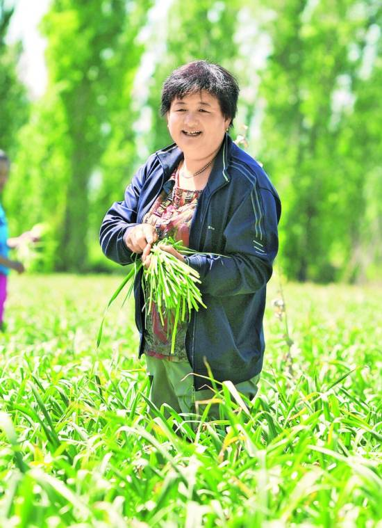

Home Page>>Comments
Li yuanmin: "jamila" in villagers' mind

The 19th national congress of the communist party of China will be held in Beijing on oct 18, 2017. According to relevant provisions of the central committee and the party constitution, 43 party members were honorably elected as deputies to the 19th CPC national congress of the autonomous region. Many of them are advanced model party members from the grassroots who have made outstanding contributions in all walks of life. From today, this newspaper launched the column of "the elegant demeanor of the 19th national congress of the communist party of China", focusing on reporting and displaying the elegant demeanor and deeds of some grassroots representatives attending the 19th national congress of the communist party of China, in order to learn and promote their excellent quality and spirit. These party members from the grass-roots front-line representatives, in the ordinary post has achieved extraordinary performance, with their own words and deeds and personality charm to practice the communist party members to serve the people's sense of purpose and excellent quality, fully reflects the advanced and extensive representation of the communist party members.
"I have the confidence and determination to do my job well, despite the pressure and the weight of responsibility on my shoulders." On September 5, li told reporters with full confidence that she will never betray the trust and trust of the whole party and will play a bigger role in leading more people to a well-off life.
Li yuanmin is the secretary of the party branch and the director of the village committee of jiemao village, hudiazi town, yining county, ili kazak autonomous prefecture. On June 29 this year, he was elected as a delegate to the 19th CPC national congress at the communist party of China's xinjiang uygur autonomous region.
From a rural woman to the party branch secretary of the village committee and director of the village committee, from a rich expert in the village to be awarded the "national excellent communist party member" honorary title.. Along the way, li yuanmin transformed gaimai village from a backroom village into a model village of "ruling village and strengthening village", and she became the "jamila" in the hearts of villagers.
Li yuanmin, 50, came to jiemao village at the age of 1 with her family from muping county, shandong province. After graduating from junior high school, she worked as a farmer at home, marrying north shore from jiligrang henan bank across the village. From raising one cow to raising more than 80, she contracted for garlic, mulch potatoes and corn.
In March 2011, li yuanmin was appointed to the post of village branch secretary by the organization. She gathered her friends and relatives together and asked them how to be a good secretary. In February 2012, with the wind blowing in the north and snowflakes, 880 households with 3,805 people and the minority population accounting for 87.3% of the village were elected in accordance with the convention. Li won the unanimous recognition of fellow villagers and was elected as the village committee director.
"At that time, the village committee had no money at all, owed more than 90,000 yuan in foreign debt, and even the furnace was a decoration," said tael jaya, deputy director of the village committee. On her first day in office, jamiara carried coal from home. She has no money for paper and pens.
"She's very enterprising! Villager wuhuo lamb simayi said that the two village cadres who took tips were taken down, and the villagers began to respect jamira with a new look: such a village head, is our ruling family!
"I don't want to be a village leader for money, but I want the whole village to live a good life." Facing this "empty shell village", li yuanmin made up her mind.
Carry out "three capital" clearing, li yuanmin and village cadres take a ruler one mu of land measurement, the construction of the village more than 340 mu of land.
"How much for an acre of land? "It's 300 yuan." The villagers voted by show of hands. The village countersigned 83 contracts, more than 100,000 yuan into the account, the village debt paid off.
Through "one case and one discussion", li yuanmin divided the homestead for 172 villagers. Bring tap water to the villagers' homes; More than 20 kilometers of asphalt; The village's 34-kilometer dirt road is paved with sand and asphalt. Repairing and inspecting 6.5km of seepage prevention channels; Forty street lamps; A steel bridge, 12 meters wide and 94 meters long, was built to solve the problems of villagers' travel. More than 600 adobe houses turned into red-roofed residential rich homes; The drafty village council bungalow turned into a beautiful office building, with a new basketball court and plastic floor in the courtyard of the village committee. Every night, the village young people were attracted to play. Li also led the villagers to learn technology and taught them how to grow garlic, watermelon and other cash crops, and fattened and raised them. In the past, the poor, weak and lax gamei village turned into a rich and famous village, with an average annual income of over 12,000 yuan.
"jamila is my oldest daughter. Villagers buy hebrezhan kasmu said of li yuanmin, his face full of pride. When li yuanmin opened the shop, she found that she was ill. She and her husband took her to the hospital by motorcycle and paid the medical fee of 500 yuan. Li also paid for the dowry of hebrizan's two daughters, presided over the marriage, and helped buy hebrizan's funeral for her husband. In the village, li yuanmin, a Uighur mother like mahe brizan, also recognized several.
In July 2002, more than 40 cattle raised by li yuanmin had run out of forage, aihetamu shantin said. He sent the family forage and 500 kilograms of corn to li yuanmin's house. When the villagers saw it, they sent grass to her house and helped her through the difficulties. Aihetan's granddaughter, Oman guli, was seriously ill, and li won min's donation of 8,500 yuan to help Oman guli, a kindness he will never forget.
In 2005, many villagers offered more than 20,000 yuan to buy Ms. Li's shop, but she gave her the shop, which had been open for 15 years, for free, says Mr. Simayi.
This July, li yuanmin sick in hospital, the hospital came to a wave of villagers. The trembling old man came, the low maintenance door came, the daughter - in - law, the young man also came...
"I'm playing with jamie now." The village's collective economy has grown from nothing to existence, with the average income of villagers exceeding 10, 000 yuan, and the construction of roads, Bridges, housing sites and village committees, she said. In her drive, he began to grow garlic, mulch corn, farming and fattening.
Kellerman nazati, a disabled person living in the comprehensive welfare home in yining county, said jamila was her "mother" and visited her every week. In addition to her, li yuan min also the courtyard more than 50 elderly relatives.
This year, the village has promised 10 practical things for the villagers, said villager nula co-buy ti ibrahim. Two kilometers of green belt, the road is planted on both sides of the flowers, gexiang village dressed like a big garden; A 7.5km farm road has been built, and trucks that come to buy produce can go directly to the fields to bargain with the villagers Village cadres do practical things for the people, one by one, the villagers all see the eye, write down in mind.
In this year's performance appraisal of the county, the people's satisfaction of the village cadres in goma reached 99.17%.
"" this achievement is Shared by all the village cadres." " "You have the people in your heart," li said. "the people have you in their hearts."